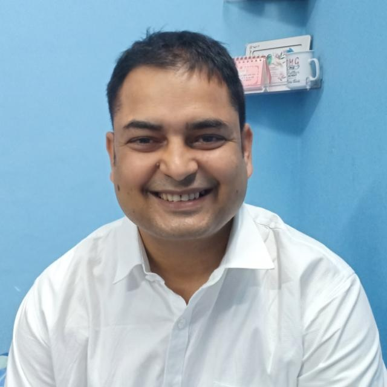

Dr. Abhay Kumar Gurumaita
Consultant General & Laparoscopic Surgeon at Gurumaita Nursing Home. Bringing world-class surgical expertise with a gentle, patient-first approach that makes every patient feel safe and cared for.

AIIMS Trained
Certified Specialist
Patient First
Compassionate Care
Certifications
Dr. Abhay Kumar Gurumaita is a distinguished Consultant General & Laparoscopic Surgeon with advanced training from AIIMS, India's most prestigious medical institution. With extensive experience in complex surgical procedures, he has transformed the lives of thousands of patients.
"Every patient who walks through my door deserves not just the best medical care, but also respect, compassion, and a listening ear. Surgery is a partnership between doctor and patient."
Operating at Gurumaita Nursing Home, Dr. Abhay brings a rare combination of technical surgical precision and extraordinary bedside manner. His patients consistently praise his polite, reassuring communication style that puts even the most anxious patients at ease before and after surgery.
Comprehensive surgical care with state-of-the-art techniques and minimally invasive approaches for faster recovery and better outcomes.
Advanced minimally invasive surgical techniques offering smaller incisions, reduced pain, minimal scarring, and significantly faster recovery compared to traditional open surgery.
Comprehensive general surgical procedures handled with precision and care, covering a broad spectrum of abdominal and digestive system conditions.
Expert management of complex wounds, abscesses, cysts, lipomas and soft tissue conditions using precise surgical techniques for optimal healing and minimal discomfort.
Specialized hernia repair using both open and laparoscopic techniques, with mesh repair options for durable, long-lasting results.
Expert removal of diseased gallbladder and inflamed appendix using minimally invasive laparoscopic techniques for quick recovery.
Holistic care approach from detailed pre-surgical evaluation through comprehensive post-operative monitoring to ensure smooth recovery.
Beyond surgical expertise, it's the human touch that sets Dr. Abhay apart — making every patient feel understood, respected, and confident in their care.
Advanced training from India's premier medical institution ensures the highest standards of surgical expertise and modern techniques.
Known for extraordinary politeness and patience communication, Dr. Abhay takes time to listen, explain, and comfort every patient.
Specializing in laparoscopic surgery for smaller incisions, less pain, minimal scarring, and significantly faster recovery times.
From first consultation through surgery to complete recovery — comprehensive care and follow-up at every step of the journey.
Dr. Abhay's approach combines cutting-edge surgical skills with genuine human compassion. Patients from across the region choose Gurumaita Nursing Home for their surgical needs, trusting in the care and expertise provided.
Real experiences from real patients who found healing, hope, and exceptional care at Gurumaita Nursing Home.
Dr. Abhay performed my gallbladder surgery with incredible precision. What amazed me was how patiently he explained the entire procedure beforehand. I never felt scared. His polite and reassuring nature is truly remarkable.
I was terrified about my hernia operation, but Dr. Abhay sat with me for nearly 30 minutes explaining everything in simple terms. The laparoscopic surgery went perfectly and I recovered so quickly. He's truly a blessing.
My son had an emergency appendix surgery at Gurumaita Nursing Home. Dr. Abhay responded immediately and performed a successful laparoscopic appendectomy. The care and follow-up after surgery was exceptional. Highly recommend!
Educational surgical videos and medical insights to help patients understand procedures and feel more confident about their treatment journey.
We are preparing an educational video library featuring surgical procedure walkthroughs, patient education content, and insights from Dr. Abhay to help you better understand your treatment and feel confident about your care.
Subscribe to stay updated when videos are published
Ready to take the first step towards better health? Reach out to Dr. Abhay Kumar Gurumaita's team at Gurumaita Nursing Home. We're here to answer your questions and schedule your consultation at your convenience.
Hospital
Gurumaita Nursing Home
Doctor
Dr. Abhay Kumar Gurumaita
Phone / WhatsApp
Consultation Hours
Mon – Sat: 9:00 AM – 7:00 PM
Location
Gurumaita Nursing Home, Clinic Address
Fill in your details and we'll get back to you shortly